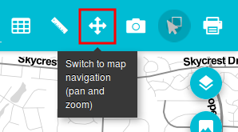

Measure tools are used to get area and distance measurements over the map canvas.
Click the Measures button and select one of the available tools: Distance or Area.

Select the distance tool to measure distances. Click on the map to set the points that define the line to measure.

When you have finished defining the line, double-click to end.

Select the area tool to measure areas. Click on the map to set the points that define the polygon to measure.

When you have finished defining the line, double-click to end.

To remove the lines and polygons created by the distance and are tools, click the measures button and select the Remove option.
To go back to map navigation mode, click the Navigation button.
